建築資料アーカイブ・展示課題
比叡山山頂に建つ「比叡山回転展望閣」の設計資料アーカイブから、模型を製作し展示する課題。模型を作りながら、設計者村野藤吾が考えたことや竣工当時の姿やその後の変遷を想像した。
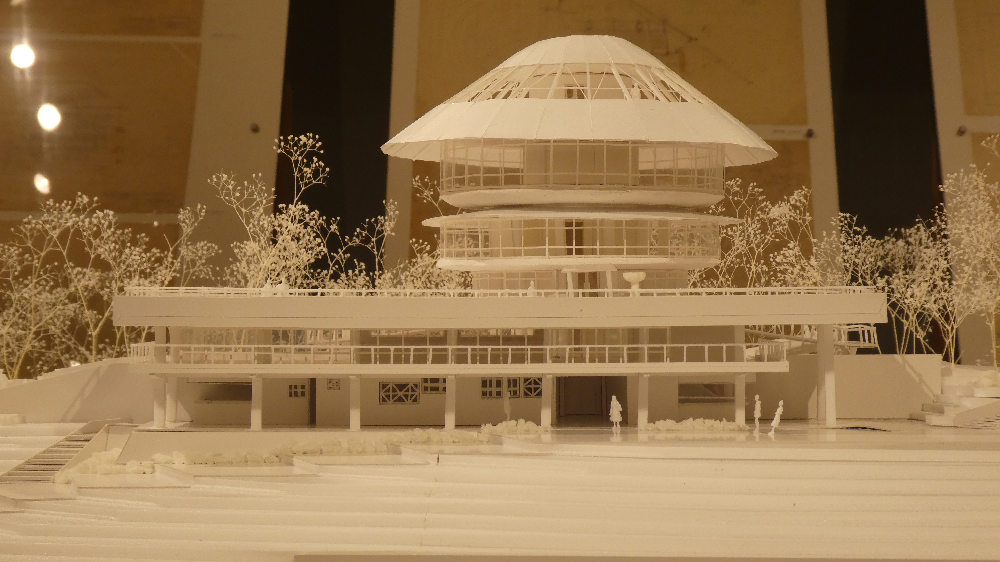
比叡山山頂に建つ「比叡山回転展望閣」の設計資料アーカイブから、模型を製作し展示する課題。模型を作りながら、設計者村野藤吾が考えたことや竣工当時の姿やその後の変遷を想像した。

大学内のいくつかの建築空間や外構を測量し図面に起こす課題。画像はグラウンド脇でたまり場になりやすい場所の良さを解剖しようと測量し図面化した場所。
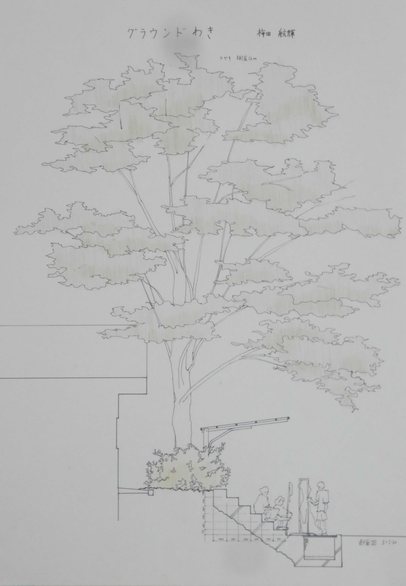
敷地である元待賢小学校は1930年代の竣工であり、建築史的な観点と住民の意識の観点の両方から、この校舎の歴史的価値がうかがえる。ところが、周辺のビルやマンションの開発によって存在がかすんで見えるとともに、大通りから見る校舎はもはや"壁"であり、周辺の住宅街との隔絶が感じられる。そこで、歴史的価値を残しつつ、現在の周辺環境とのつながりをつくるために、「道」の貫入による校舎のコンバージョンを構想した。
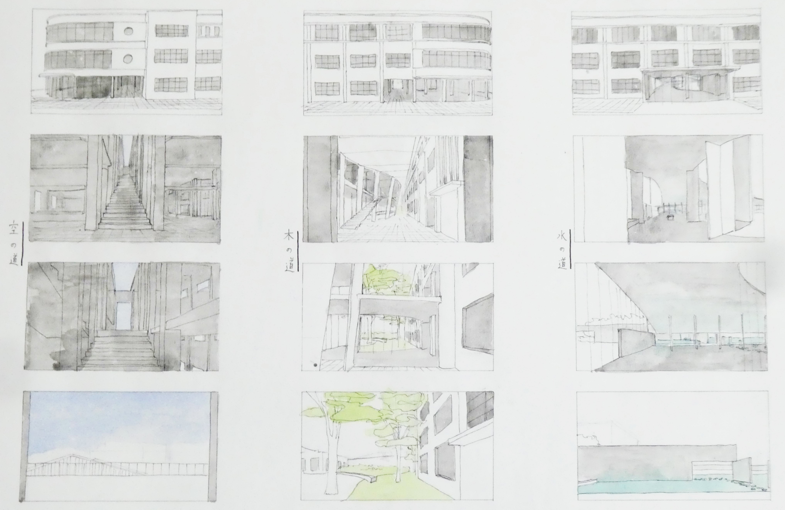
四方を囲まれた「部屋」ではなく、二面の壁によって挟まれたあいまいな領域に「保育室」や「遊戯室」「トイレ」などの機能をあてはめた。利用者は、壁に空いた大きなアーチを介して領域を横断しつつ動き回る。
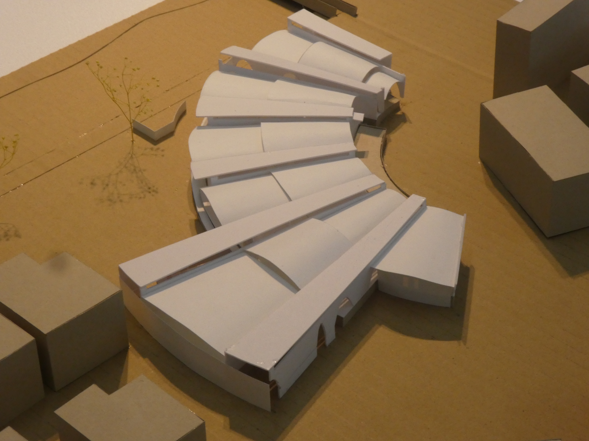
共同体的なものが氷解し、個人と公に分裂した社会の中で、個人が心理的に自分の場所を持ちつつ、生活空間を共有するアパートを構想した。
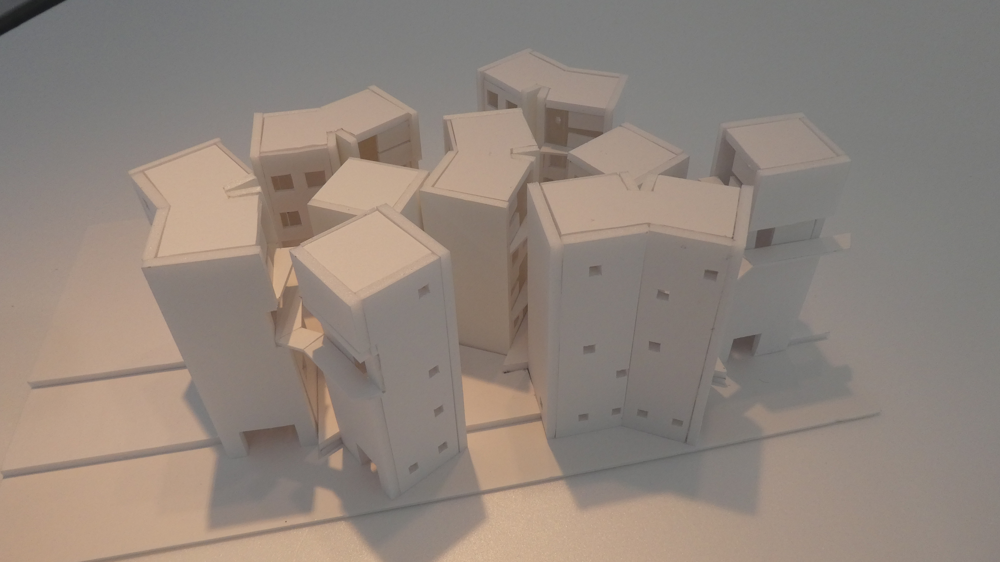
敷地である大学の中庭の良い所は、もとからある構造物の起伏と周辺の草木によって、適度な囲まれ感があることである。しかも、そうした場所が人によって複数ある。ここにできるカフェでは、そうしたもとの構造物と草木がなす空間性が多く残されているべきだと考える。その上で、この中庭全体に新たな空間の秩序をつくることを目指した。

石をモチーフに、宝ヶ池公園に滞在するスペースを構想する。拾ってきた石は角ばりながら、多数の平らな面を持っていた。この石の形成過程に注目し、かつてそうだった形、そこにかかった力を想像して第二の表面を考えた。
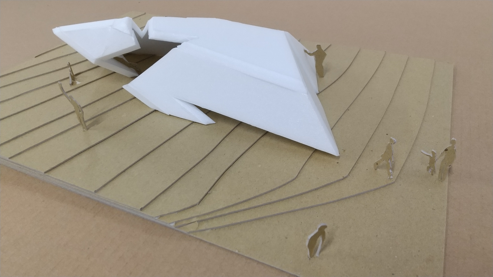
日本美術の要素を用いて、現代のポスターを制作する課題。「慧可断臂図」をモチーフにして、職人的な仕事をする工場（コウバ）の祭典を想定し制作した。
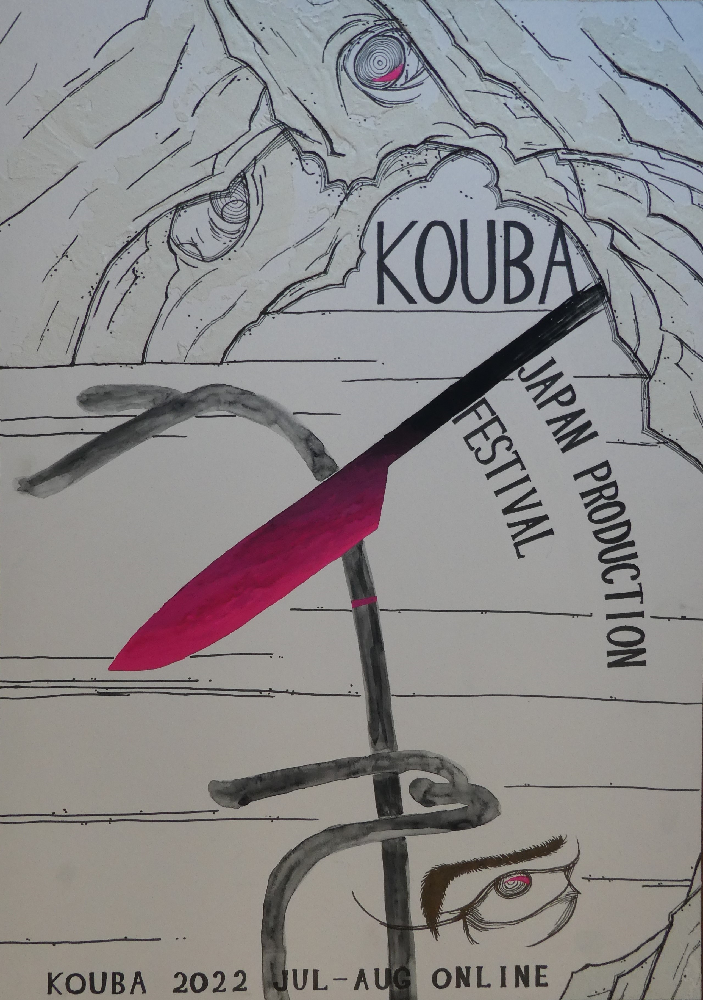
モーターを自作し、その動力を用いて何かしらの機能を持ったものを制作する課題。水を張り、それをモーターによって震わせることで、そこに当てた光の揺らぎを楽しむものを制作した。
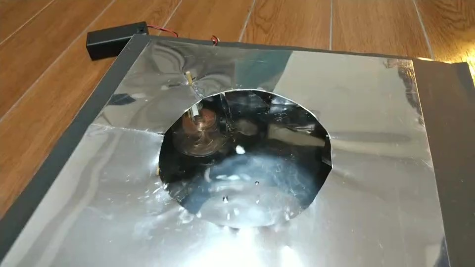
映画の場面を模写し、そのビジュアル的な構図や明暗のバランスを理解する課題。題材にしたのは映画『タクシードライバー』。
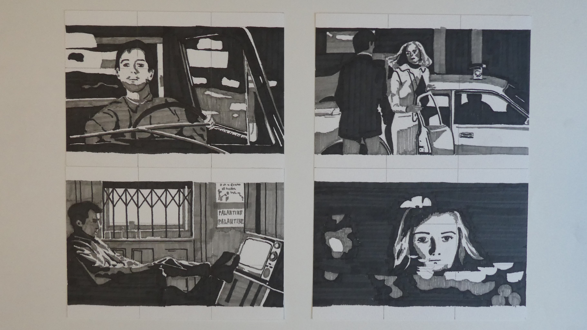
ベルギーの学生と共同で、日本の「間」の概念を取り入れ、ベルギーの敷地に何かを構想する課題。内と外があいまいになる休憩所のようなものを構想した。
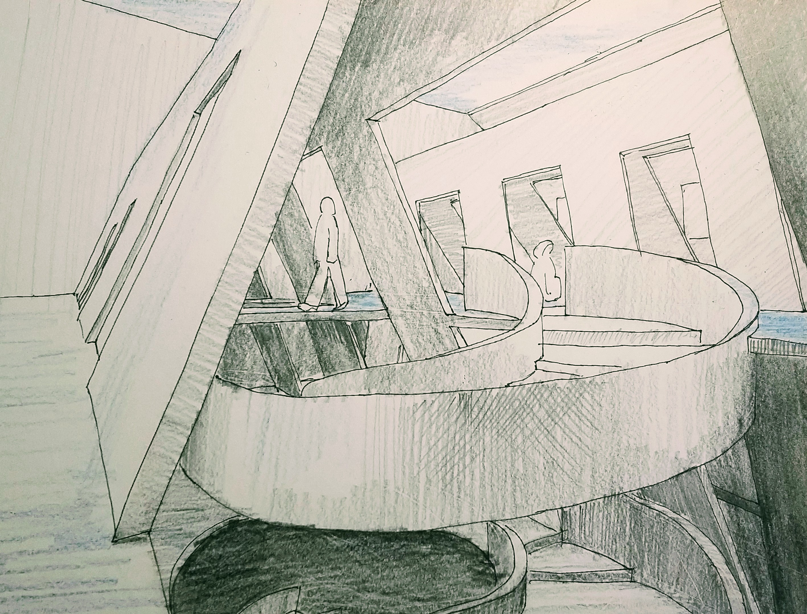
立方体を2つ結合し、図面に起こす課題。調和的に見える側面と、非調和的に見える側面があるアンビバレントな立体を制作した。
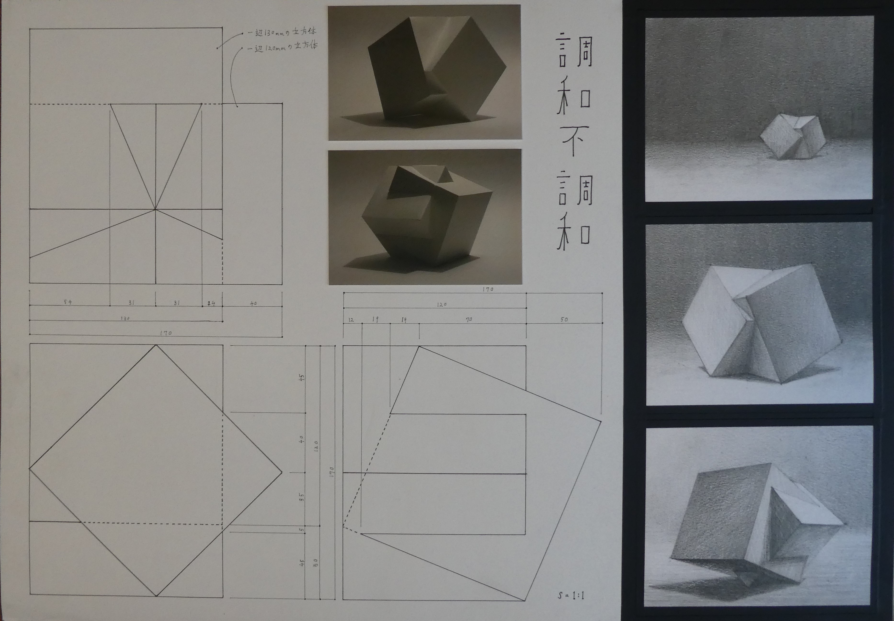
何かしらのロゴを制作する課題。「日本きのこ学会」を題材にして、地味だが大事な発見のあるきのこに関する研究の先駆性を表現した。
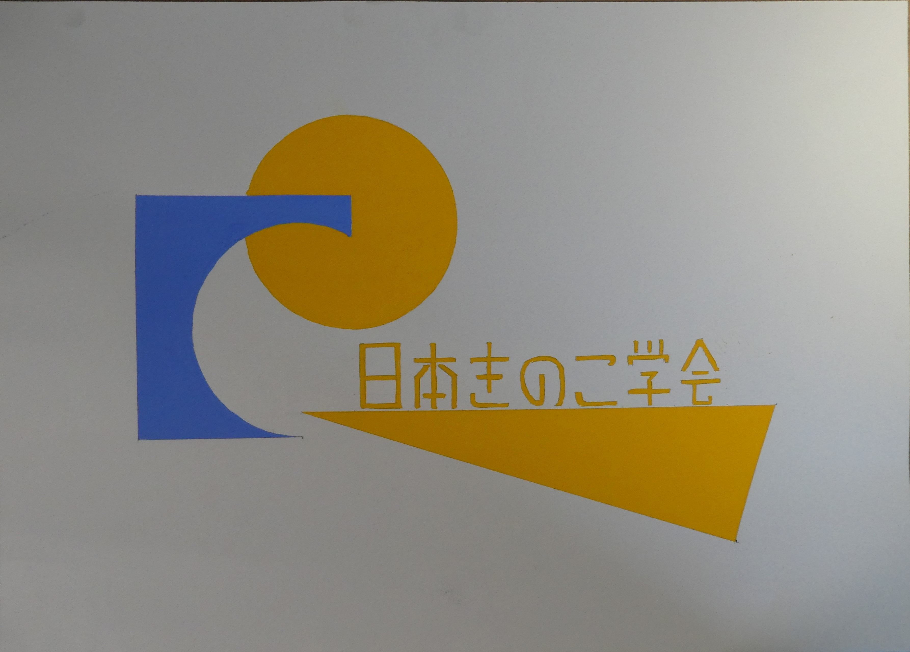
植物をモチーフに反復するビジュアルパターンを作る課題。遠くから見たときの印象と近くから見たときの印象が変わるような色味やパターンを考え、壁紙のようなものとして作った。
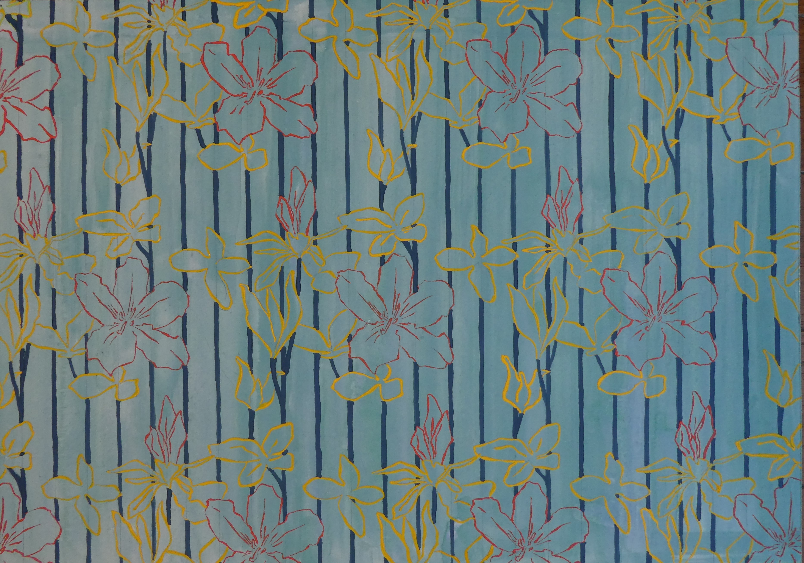